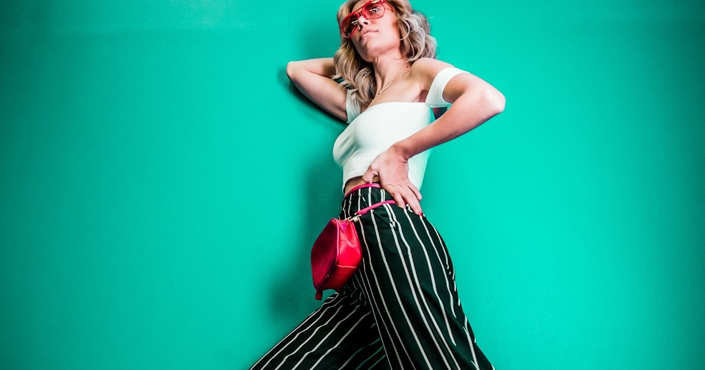
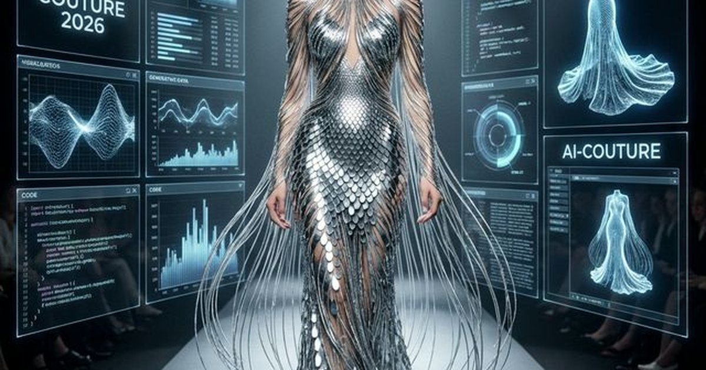
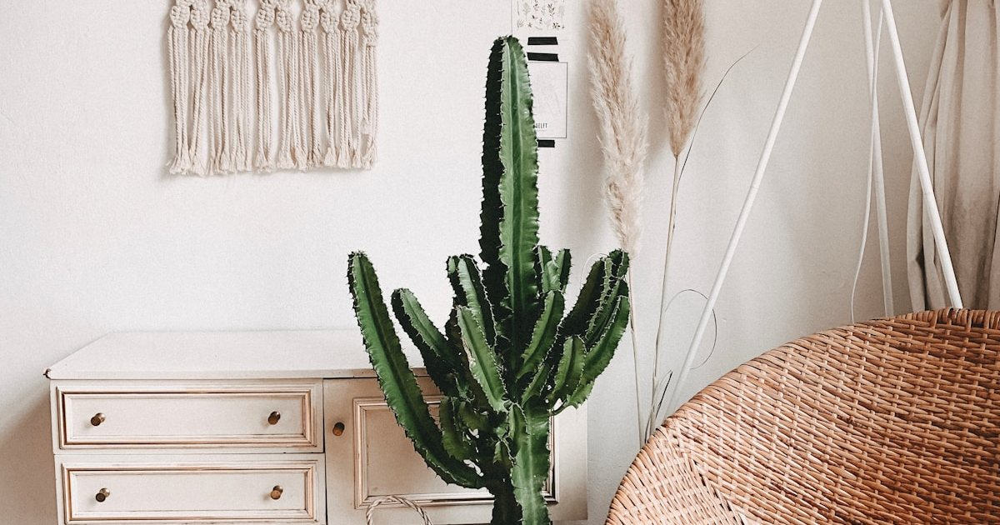
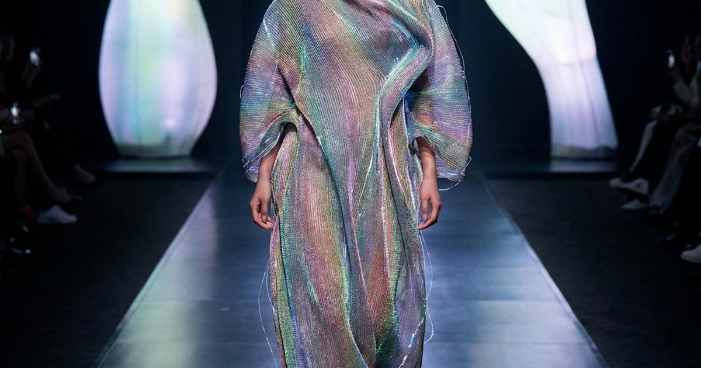
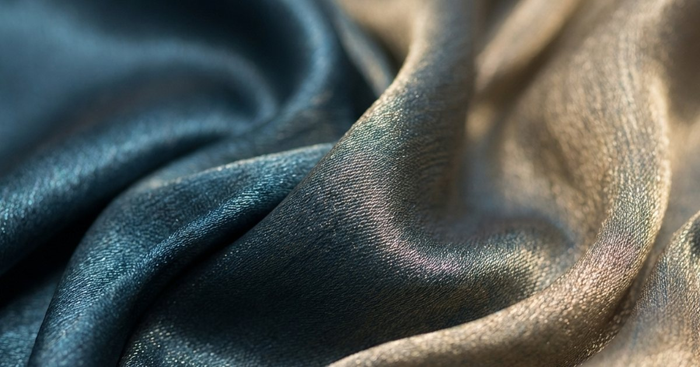
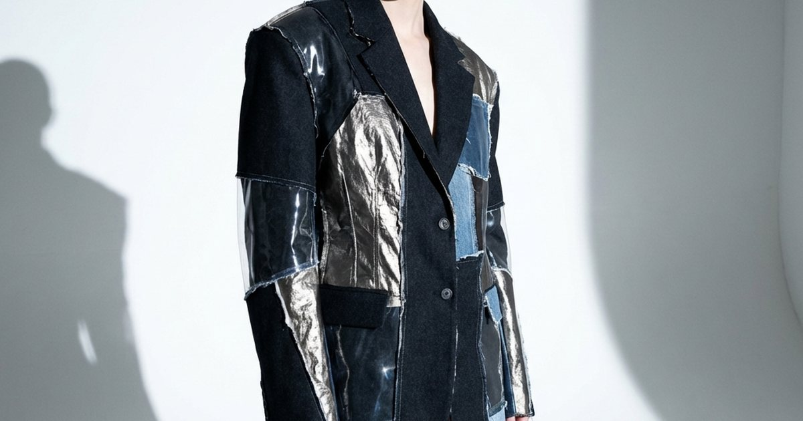
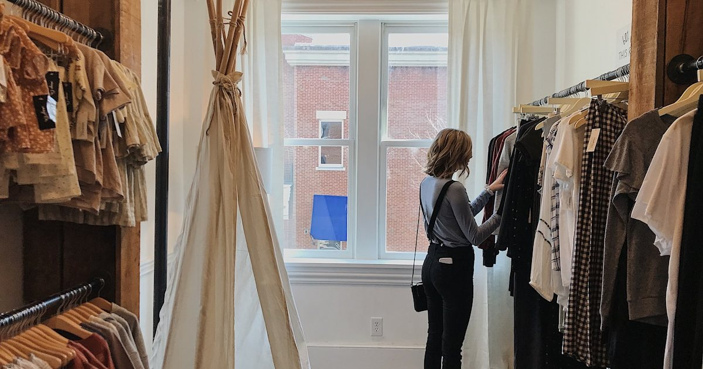

2026 春夏趨勢轉譯
色彩、白色、材質、靜奢、配件與個人風格，先回到台灣氣候與熟齡比例來判斷。
進入策展 →深入解析全球四大時裝週及高級訂製時裝的最新動向，透過第一手報導、設計師專訪與趨勢分析， 為讀者精準解讀每一季的時尚風向與背後故事，確保您永遠走在潮流尖端。
先把秀場訊號轉成能穿、能用、能重複的日常判斷。
從本季秀場焦點、輪廓變化到設計語言轉向，這裡收錄最新值得追的趨勢內容。

深入解析 2026 倫敦時裝週虛實整合趨勢。Elite Fashion 為你拆解數位自我如何成為當代精英的新型態身分識別，探索 AR 時尚與虛擬權威的未來風景。解析秀場語言、材質工藝與造型趨勢，幫助讀者把國際時尚轉譯成可理解的風格判斷。
閱讀全文 →2026 時尚趨勢深度報告：年長力量的崛起。Elite Fashion 為你解析成熟模特如何重塑奢侈品價值體系，以及這場『無齡化運動』對現代讀者的深遠啟示。解析秀場語言、材質工藝與造型趨勢，幫助讀者把國際時尚轉譯成可理解的風格判斷。
閱讀全文 →解析 2026 年靜奢風 2.0 如何回到材質、輪廓、低維護與日常安定感，整理讀者更容易落地的穿搭方向。解析秀場語言、材質工藝與造型趨勢，幫助讀者把國際時尚轉譯成可理解的風格判斷。並補充適合台灣日常的檢查重點與延伸閱讀，方便搜尋後快速掌握方向。
閱讀全文 →
深入探索 2025 春夏巴黎時裝週。Elite Fashion 為你解析 Chanel 的優雅、Saint Laurent 的鋒芒，以及極簡主義如何在全球動盪中成為最後的時尚信仰。解析秀場語言、材質工藝與造型趨勢，幫助讀者把國際時尚轉譯成可理解的風格判斷。
閱讀全文 →
深入探索 2025 紐約時裝週。Elite Fashion 為你拆解 Marc Jacobs 的街頭奢華、Tommy Hilfiger 的美式精髓，以及次文化如何登堂入室成為當代權威。解析秀場語言、材質工藝與造型趨勢，幫助讀者把國際時尚轉譯成可理解的風格判斷。
閱讀全文 →深入探索 2025 米蘭時裝週的色彩趨勢。Elite Fashion 為你解析 Versace 的霓虹光譜、Prada 的柔和粉彩，以及義大利設計師如何定義新時代的視覺主權。解析秀場語言、材質工藝與造型趨勢，幫助讀者把國際時尚轉譯成可理解的風格判斷。
閱讀全文 →
探討 AI 如何注入百年法式工藝，為精英女性打造專屬的個性化收購體驗。從精準建模到工匠溫度...
閱讀全文 →
面料進化為生命體。探索生物感測纖維如何自動調節溫度，為熟齡女性提供極致的穿衣舒適度...
閱讀全文 →從視覺符號轉向觸覺療癒。解析 2026 年精英階層如何透過「深度質感」找回內心平靜...
閱讀全文 →美不應被年齡束縛。探討 2026 年一線品牌如何重新發現「時間」在女性身上刻畫出的權威美感...
閱讀全文 →珠寶成為健康守護者。解析 2026 年整合 UV 指數與空氣品質監測的隱形科技美學...
閱讀全文 →
實體與虛擬的終極合體。倫敦時裝週如何利用 AR 技術顯化內在色彩，定義新時代的社交語彙...
閱讀全文 →
泡沫破裂後，存活下來的是真正的應用。探討 2026 年數位時尚如何從炒作轉向在 AR 濾鏡與元宇宙社交中展現實用價值...
閱讀全文 →
探索 2026 年最新時裝趨勢：數位織品與虛實整合美學。解析發光纖維與 3D 針織如何重塑伸展台...
閱讀全文 →
解析 2026 年時裝週年度色：深海藍與流沙金。探索這兩種色彩背後的權力美學與時尚心理學...
閱讀全文 →
解析 2026 年時裝週焦點：解構主義與驚豔的不對稱剪裁。探索設計師如何重構時尚語彙...
閱讀全文 →本季巴黎時裝週見證了極簡主義美學的全面回歸，各大品牌不約而同地選擇了乾淨的線條、中性色調與精緻的剪裁。 從Chanel的優雅線條到Saint Laurent的都會風格，設計師們正在重新定義當代奢華的意義...
閱讀全文 →與巴黎的極簡形成鮮明對比，米蘭時裝週展現了色彩的無限可能。從Versace的霓虹光譜到Prada的柔和粉彩， 義大利設計師們正在用顏色講述關於樂觀與希望的故事，為時尚注入全新活力...
閱讀全文 →
紐約時裝週持續引領街頭時尚與奢華品牌的跨界合作趨勢。本季Marc Jacobs、Tommy Hilfiger等品牌展現了 如何將運動元素、塗鴉藝術與精緻工藝完美結合，創造出既實穿又前衛的當代美學...
閱讀全文 →
倫敦時裝週再次證明了其作為永續時尚先驅的地位。從Stella McCartney的創新材質到Vivienne Westwood 的環保宣言，英國設計師們正在用實際行動證明，時尚可以既美麗又負責任...
閱讀全文 →
巴黎高級訂製時裝週展現了頂級工藝的極致魅力。從Dior的精緻刺繡到Chanel的手工縫製，每一件作品都是 數百小時匠心獨運的結晶。探索這些永恆創作背後的故事與技藝傳承...
閱讀全文 →展望即將到來的秋冬季，時尚界將見證兩大對立美學的激烈對話。解構主義的不對稱剪裁與新浪漫主義的 柔美蕾絲將在同一舞台上共舞，創造出前所未有的視覺衝擊與情感共鳴...
閱讀全文 →把伸展台訊號轉成日常可用的風格判斷。
秀場提供色彩、材質與比例方向；日常穿搭則要回到氣候、場合、衣櫥既有單品與自己的活動節奏。
需要，但重點不是照單全收，而是理解哪些元素能讓既有衣櫥更新，哪些只適合欣賞或小面積嘗試。
可以先看趨勢轉譯與季節企劃，再進入色彩、材質、配件或特定時裝週觀察。
依更新時間整理，方便從主題分類頁直接進入所有相關文章。